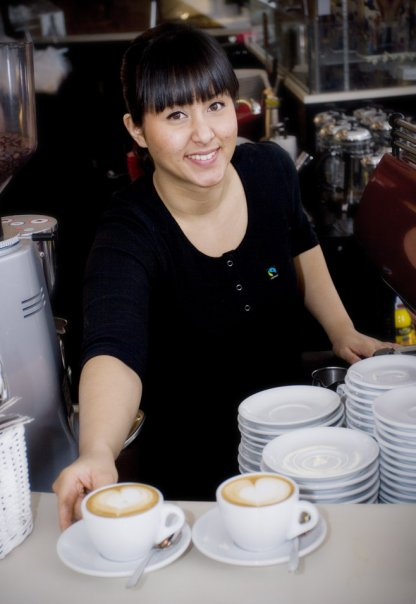

Caroline Uthawong-Burr
WORK EXPERIENCE
Arbetsgivare:Östanskär Hotell & Konferens, Indal
Befattning: Servitris
Beskrivning: Restaurant och hotell. Timanställd
Anställningstid: September 2023-
Arbetsgivare: En Liten Krog, En Liten Sjökrog, Lokal, Sundsvall
Befattning: Servitris, Bartender och Barista
Beskrivning: Restaurant och caféverksamhet, varierande tjänstgöringsgrad. Timanställd
Anställningstid: Maj 2023-
Arbetsgivare: Barista Fair Trade Coffee, Stockholm
Befattning: Manager och Barista
Beskrivning: Caféverksamhet, varierande tjänstgöringsgrad. Fastanställd 40 h/v
Anställningstid: Maj 2008-Juni 2009
Arbetsgivare: WAY, Stockholm
Befattning: Butikssäljare
Beskrivning: Klädbutik. Fastanställd 40h/v
Anställningstid: September 2005-Augusi 2006
Arbetsgivare: Oscar Matsal & Bar, Sundsvall
Befattning: Servitris
Beskrivning: Restaurant / nattklubb / bar, varierande tjänstgöringsgrad. Timanställd 20-40 h/v
Anställningstid: Maj 2003-Augusti 2005
Arbetsgivare: Chaow Praya River, Sundsvall
Befattning: Servitris
Beskrivning: Restaurant. Varierande tjänstgöringsgrad, helger
Anställningstid: September 2001-Maj 2004
Arbetsgivare: Wayne’s Coffee, Sundsvall
Befattning: Barista
Beskrivning: Caféverksamhet, varierande tjänstgöringsgrad, helger/skollov
Anställningstid: Juni 1999-Maj 2004
